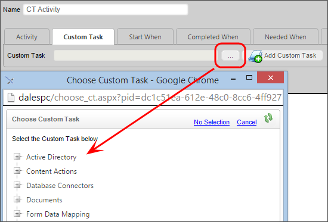

A Process Timeline Custom Task can be added to a Process Timeline Definition just like a built-in activity type. The Process Timeline custom task cannot have any user participants; they run and then immediately transition to the next activity in the Process Timeline without any user intervention. They are configured similarly to standard task types and must exist in the path/route of the Process Timeline to be executed.
To use a custom task in a Process Timeline Definition, select Custom Task from the Activity Type dropdown under the Activity Tab.
Then click on the custom task tab. Select you Custom Task from the pick list and click the Add Custom Task button. This now acts like any other Process Timeline activity.
